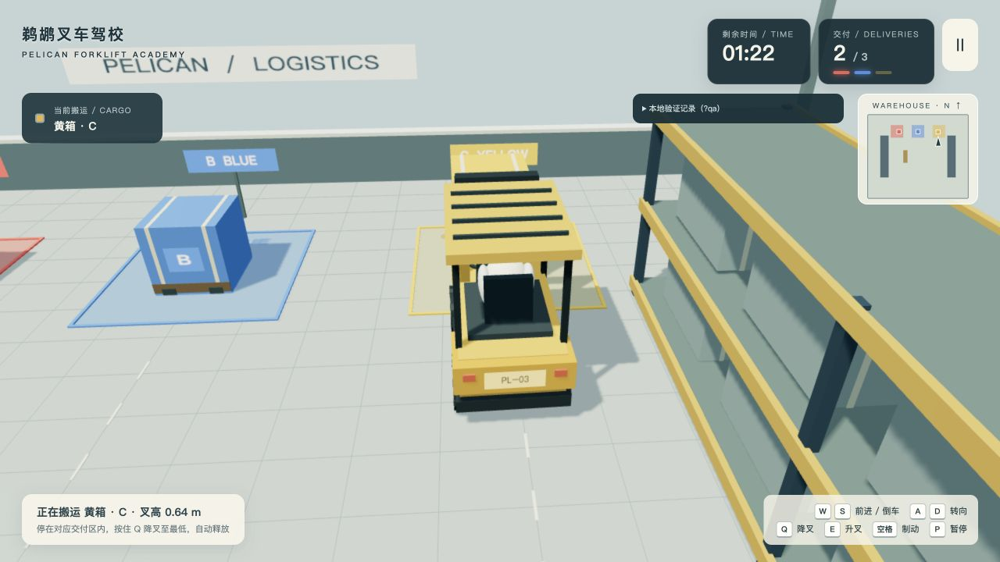
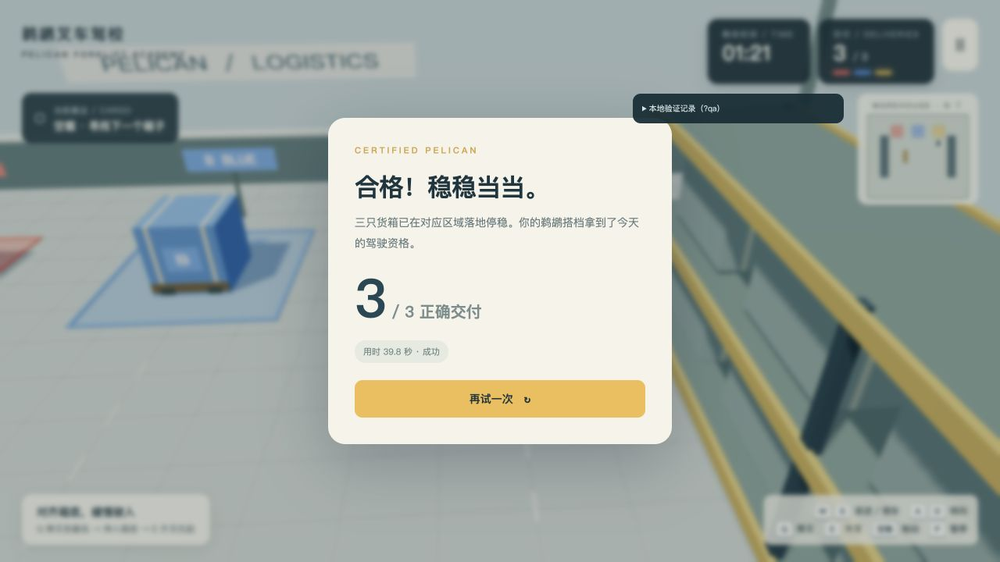
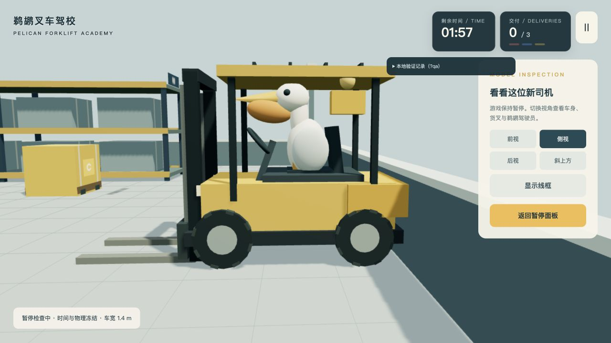
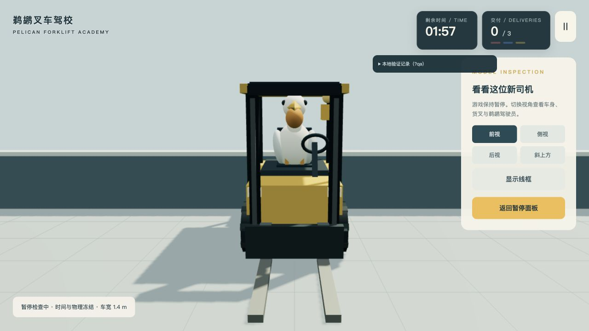
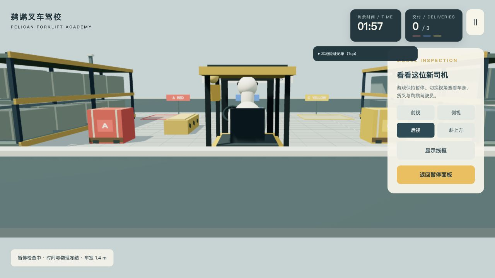
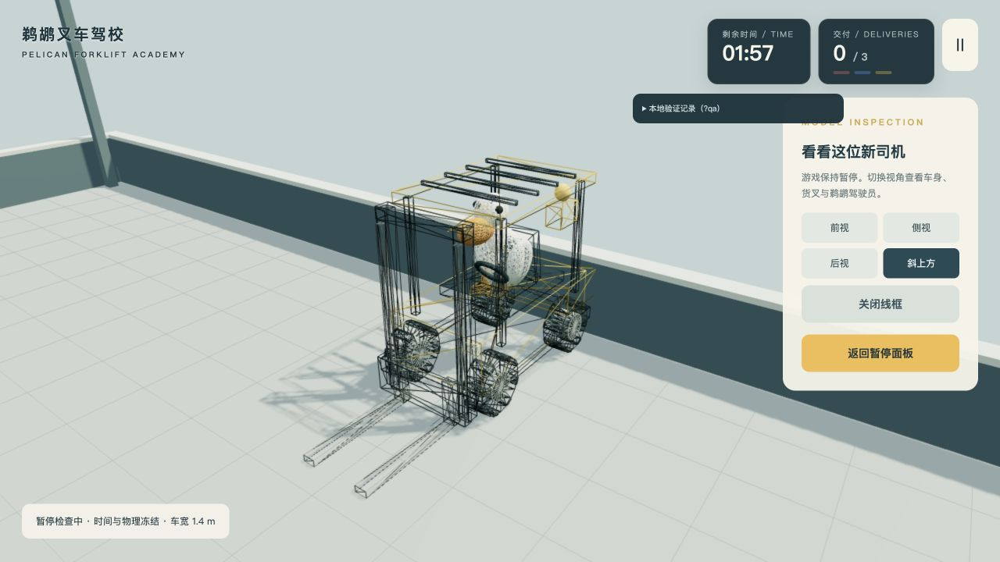
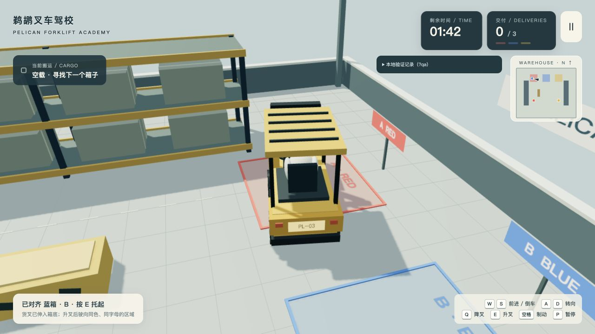
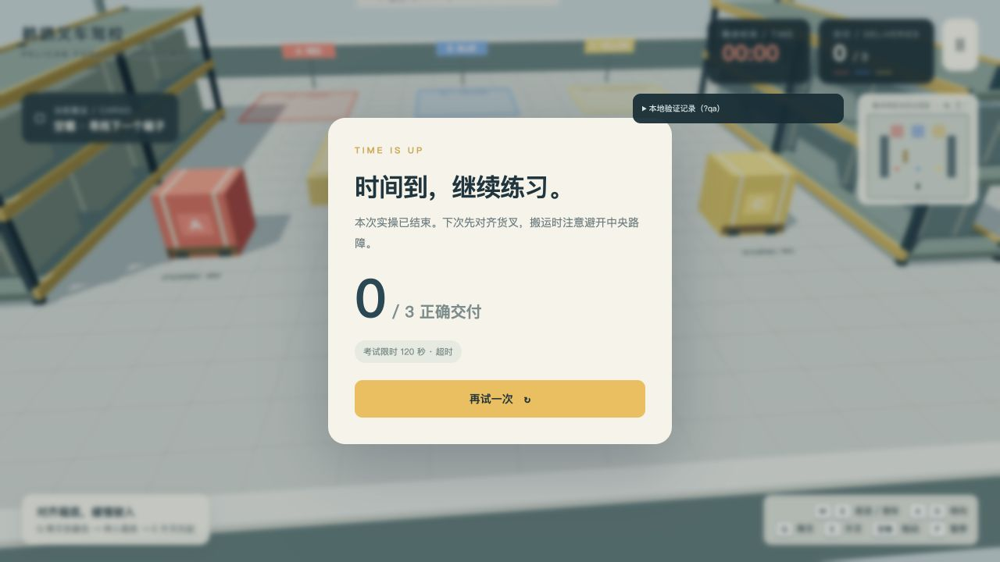

LOCAL PRODUCTION BUILD · ACTUAL OBSERVATIONS
实驾、验收与原始记录
已完成真实键盘驾驶、三箱搬运、边界碰撞、错色与重复计分检查。最终构建在 sandbox="allow-scripts"、无同源身份的iframe中再次完成三箱交付，游戏用时39.833秒。所有截图和数据来自本次本地运行。
3 / 3最终沙箱实驾通关
10.1 ms60秒帧间隔P95 · 阈值33.3ms
10 次重开后资源计数无持续增长
性能采样
Apple M5 Pro / 48GiB，Chromium 155。生产构建，1280×720，设备与渲染DPR均为1。按原始工具预热10秒后采样60秒，共7200条数据；游戏游玩中无驾驶输入，全部场景物体保留。
| 指标 | 实测值 | 原始证据 |
|---|---|---|
| 帧间隔 P95 / 平均 / 最大 | 10.1000 / 8.3334 / 10.4000 ms | 7200条逐帧数组 |
| 连续重开10次 | 几何体28 / 纹理20 / 程序7，全部相同 | 十次原始记录 |
| 硬件、浏览器与条件 | 1280×720 / DPR1 / 10秒+60秒 | 完整条件 |
性能结果与默认设备DPR2的功能截图分别记录；功能截图同样使用1280×720画布、渲染DPR1。
画面与模型检查








原始数据
- 最终沙箱通关状态与事件
- 通关后输入冻结
- 携带驶入区域不计分
- 错色完整落地不计分
- 重复交付前
- 重复交付后
- 稳定计时暂停前
- 暂停等待后稳定计时
- 自然超时状态
- 超时后输入冻结
- 撞墙状态
- 暂停中输入状态
- 检查返回状态
- 重开恢复状态
- 基于实际快照的复核
- 本地资源HTTP检查
复现与实现
完整交付说明记录启动方式、判定阈值、容差、最小假设和未运行检查。模型及游戏源码副本 / 界面样式。沙箱iframe检查页需由支持跨来源资源的本地静态服务提供。
未覆盖跨浏览器、移动端或长时间压力测试；60秒性能样本为静止游玩场景。车辆采用简化碰撞与运动学搬运，未实现悬挂、翻倒或精密液压；极端高举越墙后降叉工况未验证。